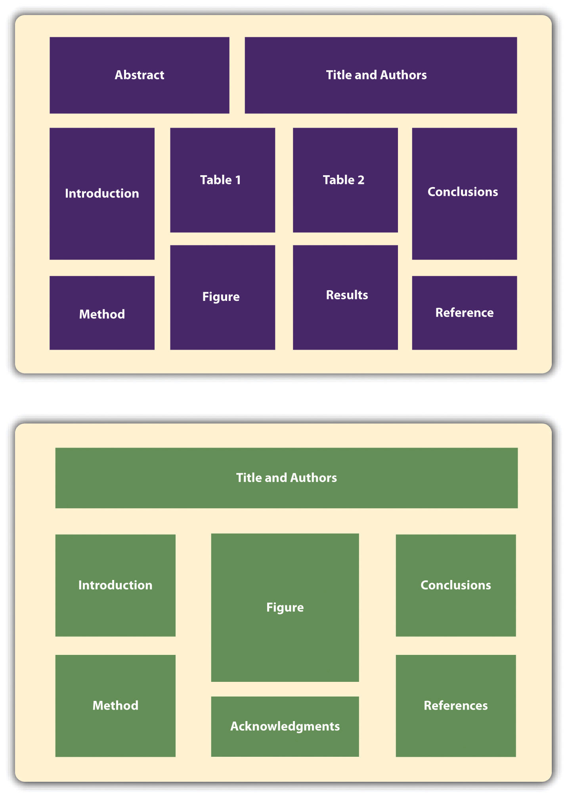

Writing an empirical research report in American Psychological Association (APA) style is only one way to present new research in psychology. In this section, we look at several other important ways.
Section 11.2 "Writing a Research Report in American Psychological Association (APA) Style" focused on writing empirical research reports to be submitted for publication in a professional journal. However, there are other kinds of manuscripts that are written in APA style, many of which will not be submitted for publication elsewhere. Here we look at a few of them.
Recall that review articlesA type of journal article in which the author summarizes previous research on a particular topic. summarize research on a particular topic without presenting new empirical results. When these articles present a new theory, they are often called theoretical articlesA type of journal article in which the author presents a new theory or evaluates existing theories.. Review and theoretical articles are structured much like empirical research reports, with a title page, an abstract, references, appendixes, tables, and figures, and they are written in the same high-level and low-level style. Because they do not report the results of new empirical research, however, there is no method or results section. Of course, the body of the manuscript should still have a logical organization and include an opening that identifies the topic and explains its importance, a literature review that organizes previous research (identifying important relationships among concepts or gaps in the literature), and a closing or conclusion that summarizes the main conclusions and suggests directions for further research or discusses theoretical and practical implications. In a theoretical article, of course, much of the body of the manuscript is devoted to presenting the new theory. Theoretical and review articles are usually divided into sections, each with a heading that is appropriate to that section. The sections and headings can vary considerably from article to article (unlike in an empirical research report). But whatever they are, they should help organize the manuscript and make the argument clear.
Until now, we have focused on the formatting of manuscripts that will be submitted to a professional journal for publication. These are referred to as copy manuscriptsA manuscript prepared according to APA style to be submitted for publication to a professional journal.. Many features of a copy manuscript—consistent double-spacing, the running head, and the placement of tables and figures at the end—are intended to make it easier to edit and typeset on its way to publication. The published journal article looks quite different from the copy manuscript. For example, the title and author information, the abstract, and the beginning of the introduction generally appear on the same page rather than on separate pages. In contrast, other types of manuscripts are prepared by the author in their final form with no intention of submitting them for publication elsewhere. These are called final manuscriptsA manuscript (such as a dissertation, thesis, or student paper) prepared in its final form that will not be submitted for publication in a professional journal. and include dissertations, theses, and other student papers.
Final manuscripts can differ from copy manuscripts in a number of ways that make them easier to read. This can include putting tables and figures close to where they are discussed so that the reader does not have to flip to the back of the manuscript to see them. It can also include variations in line spacing that improve readability—such as using single spacing for table titles and figure captions or triple spacing between major sections or around tables and figures. Dissertations and theses can differ from copy manuscripts in additional ways. They may have a longer abstract, a special acknowledgments page, a table of contents, and so on. For student papers, it is important to check with the course instructor about formatting specifics. In a research methods course, papers are usually required to be written as though they were copy manuscripts being submitted for publication.
One of the ways that researchers in psychology share their research with each other is by presenting it at professional conferencesA meeting at which researchers in a particular field gather to share their research.. (Although some professional conferences in psychology are devoted mainly to issues of clinical practice, we are concerned here with those that focus on research.) Professional conferences can range from small-scale events involving a dozen researchers who get together for an afternoon to large-scale events involving thousands of researchers who meet for several days. Although researchers attending a professional conference are likely to discuss their work with each other informally, there are two more formal types of presentation: oral presentations (“talks”) and posters. Presenting a talk or poster at a conference usually requires submitting an abstract of the research to the conference organizers in advance and having it accepted for presentation—although the peer review process is typically not as rigorous as it is for manuscripts submitted to a professional journal.
Following are links to the websites for several large national conferences in the United States and also for several conferences that feature the work of undergraduate students. For a comprehensive list of psychology conferences worldwide, see the following website.
http://www.conferencealerts.com/psychology.htm
Large National Conferences
American Psychological Association Convention: http://www.apa.org/convention
Association for Psychological Science Conference: http://www.psychologicalscience.org/index.php/convention
Society for Personality and Social Psychology Conference: http://www.spsp.org/confer.htm
Psychonomic Society Annual Meeting: http://www.psychonomic.org/annual-meeting.html
Undergraduate Conferences
Carolinas Psychology Conference: http://www.meredith.edu/psych/cpc/default.htm
Illowa Undergraduate Psychology Conference: http://homepages.culver.edu/illowa
L. Starling Reid Undergraduate Psychology Conference (University of Virginia): http://www.virginia.edu/psychology/conference
Psychology Undergraduate Research Conference (UCLA): http://purc.psych.ucla.edu
Mid-America Undergraduate Psychology Research Conference: http://castle.eiu.edu/psych/mauprc
Stanford Undergraduate Psychology Conference: http://www.stanfordconference.org
Western Pennsylvania Undergraduate Psychology Conference: http://webpub.allegheny.edu/group/wpuc/WPUPweb_page/WPUPC.htm
Western Psychology Conference for Undergraduate Research: http://www.stmarys-ca.edu/psychology/the-western-psychology-conference-for-undergraduate-research-wpcur
In an oral presentationA presentation at a professional conference in which presenters stand in front of an audience and tell them about their research, usually with the aid of a slide show. Such presentations, which are informally called “talks,” can last anywhere from 10 minutes to an hour., or “talk,” the presenter stands in front of an audience of other researchers and tells them about his or her research—usually with the help of a slide show. Talks usually last from 10 to 20 minutes, with the last few minutes reserved for questions from the audience. At larger conferences, talks are typically grouped into sessions lasting an hour or two in which all the talks are on the same general topic.
In preparing a talk, presenters should keep several general principles in mind. The first is that the number of slides should be no more than about one per minute of the talk. The second is that a talk is generally structured like an APA-style research report. There is a slide with the title and authors, a few slides to help provide the background, a few more to help describe the method, a few for the results, and a few for the conclusions. The third is that the presenter should look at the audience members and speak to them in a conversational tone that is less formal than APA-style writing but more formal than a conversation with a friend. The slides should not be the focus of the presentation; they should act as visual aids. As such, they should present main points in bulleted lists or simple tables and figures.
Another way to present research at a conference is in the form of a posterA simple written presentation that is posted on a bulletin board during a poster session at a professional conference. The presenter stands near the poster and interacts with other researchers who are interested in the research.. A poster is typically presented during a one- to two-hour poster sessionA one- or two-hour session at a professional conference in which several researchers present their posters, often on related topics. that takes place in a large room at the conference site. Presenters set up their posters on bulletin boards arranged around the room and stand near them. Other researchers then circulate through the room, read the posters, and talk to the presenters. In essence, poster sessions are a grown-up version of the school science fair. But there is nothing childish about them. Posters are used by professional researchers in all scientific disciplines and they are becoming increasingly common. At a recent American Psychological Society Conference, nearly 2,000 posters were presented across 16 separate poster sessions. Among the reasons posters are so popular is that they encourage meaningful interaction among researchers.
Figure 11.6

New research is often presented in the form of posters at professional conferences.
Source: Photo courtesy of McMaster University Science MediaLab
Although a poster can consist of several sheets of paper that are attached separately to the bulletin board, it is now more common for them to consist of a single large sheet of paper. Either way, the information is organized into distinct sections, including a title, author names and affiliations, an introduction, a method section, a results section, a discussion or conclusions section, references, and acknowledgments. Although posters can include an abstract, this may not be necessary because the poster itself is already a brief summary of the research. Figure 11.7 "Two Possible Ways to Organize the Information on a Poster" shows two different ways that the information on a poster might be organized.
Figure 11.7 Two Possible Ways to Organize the Information on a Poster
Given the conditions under which posters are often presented—for example, in crowded ballrooms where people are also eating, drinking, and socializing—they should be constructed so that they present the main ideas behind the research in as simple and clear a way as possible. The font sizes on a poster should be large—perhaps 72 points for the title and authors’ names and 28 points for the main text. The information should be organized into sections with clear headings, and text should be blocked into sentences or bulleted points rather than paragraphs. It is also better for it to be organized in columns and flow from top to bottom rather than to be organized in rows that flow across the poster. This makes it easier for multiple people to read at the same time without bumping into each other. Posters often include elements that add visual interest. Figures can be more colorful than those in an APA-style manuscript. Posters can also include copies of visual stimuli, photographs of the apparatus, or a simulation of participants being tested. They can also include purely decorative elements, although it is best not to overdo these.
Again, a primary reason that posters are becoming such a popular way to present research is that they facilitate interaction among researchers. Many presenters immediately offer to describe their research to visitors and use the poster as a visual aid. At the very least, it is important for presenters to stand by their posters, greet visitors, offer to answer questions, and be prepared for questions and even the occasional critical comment. It is generally a good idea to have a more detailed write-up of the research available for visitors who want more information, to offer to send them a detailed write-up, or to provide contact information so that they can request more information later.
For more information on preparing and presenting both talks and posters, see the website of Psi Chi, the International Honor Society in Psychology: http://www.psichi.org/conventions/tips.aspx.